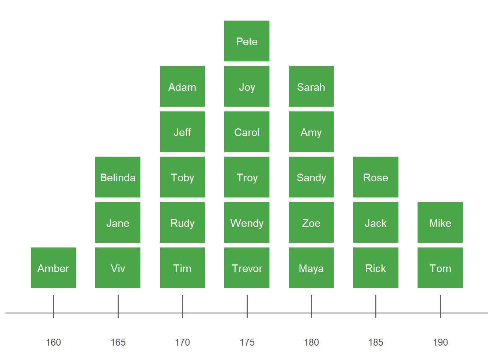
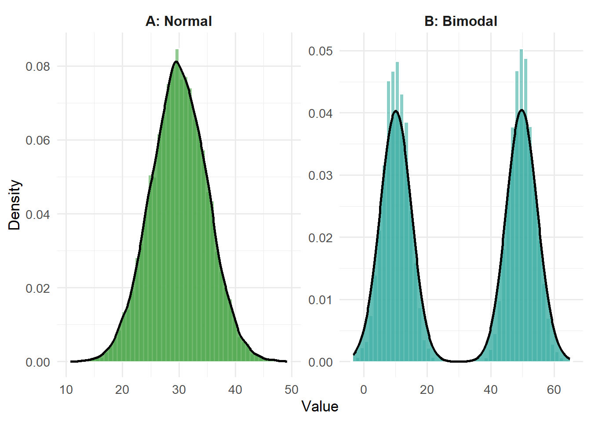
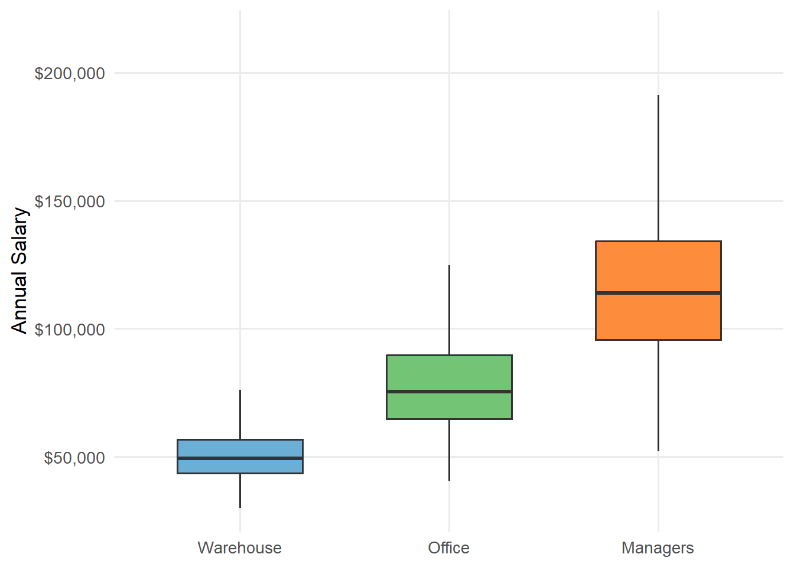
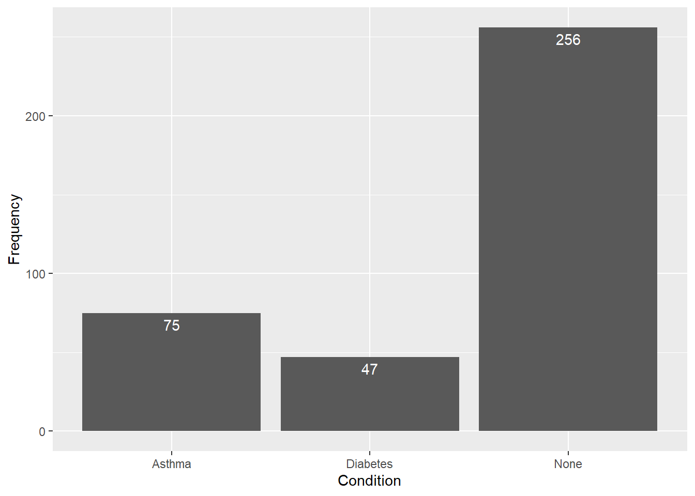
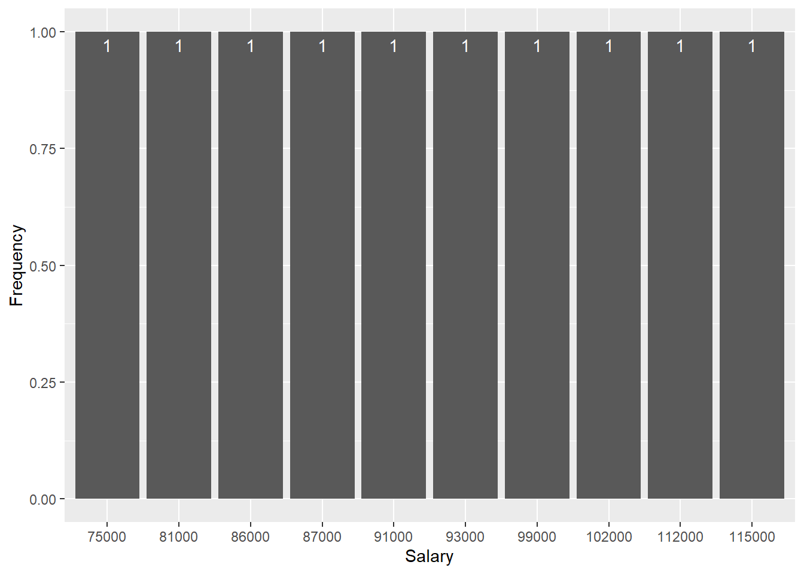
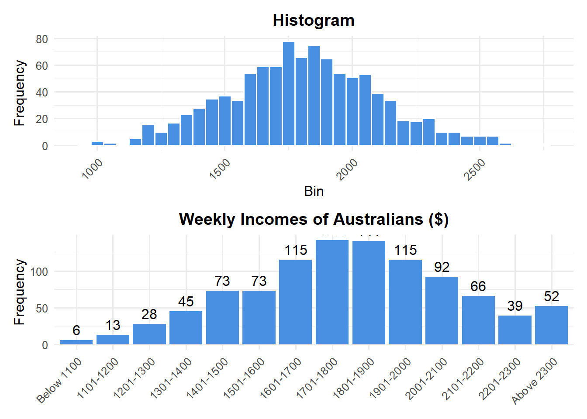

Order | Country | CO2_Emissions_kt |
|---|---|---|
1 | China | 10,944,686 |
2 | United States | 4,320,533 |
3 | India | 2,200,836 |
4 | Russian Federation | 1,618,271 |
5 | Japan | 1,014,065 |
6 | Iran, Islamic Rep. | 616,561 |
7 | Germany | 603,351 |
8 | Korea, Rep. | 569,682 |
9 | Indonesia | 563,197 |
10 | Canada | 516,874 |
11 | Saudi Arabia | 513,556 |
12 | Brazil | 414,139 |
13 | Turkey | 407,406 |
14 | South Africa | 393,242 |
15 | Mexico | 383,131 |
16 | Australia | 378,997 |
17 | Viet Nam | 355,323 |
18 | United Kingdom | 308,650 |
19 | Italy | 281,287 |
20 | Poland | 279,224 |
2 Analysing Numerical Data
Learning Objectives
By the end of this chapter, you should be able to:
- Explain why standardisation is important and describe situations where data must be adjusted (e.g., per capita, inflation-adjusted, or using Z-scores).
- Differentiate between measures of centrality—mean, median, and mode—and identify when each is most appropriate for summarising data.
- Recognise and describe different data distributions, including symmetrical and skewed distributions, and explain how distribution shape affects interpretation of averages.
- Calculate and interpret measures of spread, including range, interquartile range (IQR), variance, and standard deviation, to assess variability in data.
- Generate and interpret descriptive statistics and visualisations (e.g., boxplots and histograms) using Excel and statistical reasoning.
- Describe and apply the concept of probability distributions, particularly the normal distribution, and use Z-scores to standardise and compare values across datasets.
- Integrate centre, spread, and shape to provide a coherent summary of a numerical dataset and make meaningful, standardised comparisons.

2.1 Introduction
In the previous chapter, we explored categorical data — data that sort people or things into distinct groups such as “left-hand/right-hand,” “yes/no,” or “sport type.” This chapter turns our attention to numerical data — data that represent quantities, such as income, test scores, or reaction times.
Understanding numerical data is essential because it allows us to move from simple description to measurement, comparison, and eventually inference. Our journey in this chapter begins with a key principle—standardisation—and moves through concepts of centre, spread, and shape, before ending with the foundations of probability distributions.
2.2 Standardising Data
When analysing data from different sources, one of the first questions we must ask is:
Are these values comparable?
Raw data often exist on very different scales — for instance, GDPs across countries, mortality rates, or sports performance metrics. Without standardisation, direct comparisons can be misleading.
The Trump Interview that broke the internet

In 2020, journalist Jonathan Swan interviewed then-President Donald Trump about America’s handling of the COVID-19 pandemic. Trump presented charts showing the United States “lowest in numerous categories,” claiming success. But Swan quickly realised that Trump was looking at deaths per case rather than deaths per population (which placed the United States at a very different position with regards to deaths):
Swan: “Oh, you’re doing death as a proportion of cases. I’m talking about death as a proportion of population.”
Measuring deaths per case highlights case fatality rates, while measuring per population captures how widely the disease spread. This exchange demonstrates that the choice of denominator fundamentally shapes interpretation.
And whilst both measures are correct, it was Swan’s facial reactions (see image above) to each of Donald Trump’s responses that stole the interview.
Standardising for Population: CO₂ Emissions Example
Another example of standardisation is carbon dioxide (CO2) omissions. In the tables below, the first three columns have the total CO2 emissions in 2020 for the 20 countries which have the highest emissions. China is at the top of the list followed by the United States, India and so forth. Australia comes in at 16th place. While it may be of interest to examine total emissions, depending upon the precise question that is being addressed, it will often be more meaningful to normalise the data by population. This makes the quantity of emissions more comparable across countries.
China has the largest emissions in main part because it has a very large population. However, each Chinese person’s emissions are actually relatively low. If we calculate CO2 emissions per capita then we get the data in the two right hand columns of the table. We can see that this tells quite a different story. China is at the bottom of the list. Qatar heads the list along with some smaller countries – Bahrain, Brunei Darussalam and Kuwait. The US and Australia rank highly on this table indicating that not only do they have high total emissions, but their emissions per person are also high.
Order | Country | CO2_Emissions_Standardised |
|---|---|---|
1 | Qatar | 31.73 |
2 | Bahrain | 21.98 |
3 | Brunei Darussalam | 21.71 |
4 | Kuwait | 21.17 |
5 | United Arab Emirates | 20.25 |
6 | Oman | 15.64 |
7 | Australia | 14.78 |
8 | Saudi Arabia | 14.27 |
9 | Canada | 13.59 |
10 | United States | 13.03 |
11 | Luxembourg | 12.46 |
12 | Kazakhstan | 11.30 |
13 | Russian Federation | 11.14 |
14 | Korea, Rep. | 10.99 |
15 | Turkmenistan | 10.18 |
16 | Trinidad and Tobago | 10.16 |
17 | Palau | 8.80 |
18 | Czechia | 8.30 |
19 | Japan | 8.03 |
20 | China | 7.76 |
2.2.1 Adjusting for Inflation
A particularly important form of standardising data is to adjust for inflation. This is relevant for data which is measured across time and that measures monetary values. The process of adjusting for the effects of inflation is necessary because money changes value over time. For example, 100 dollars in 1990 was worth more (in the sense that you could buy more goods and services with it) than is 100 dollars now, because prices have (generally) risen in that time.
This is a really important observation because a lot of series are measured in dollar values. One of the most important is Gross Domestic Product (GDP). This measures the total value of all goods and services produced in the economy in a given period. In Figure 2.2, Australia’s GDP per capita is shown (we have divided GDP by the population to make it more meaningful along the lines of the previous discussion above). This shows a massive rise in nominal GDP per capita. It has risen from around \(23,000\) in 1990 to almost \(100,000\) in 2024. This is a rise of around 4 times. But does this mean we are 4 times wealthier than in 1990? No, because prices also rose over this period.
It turns out that prices have more than doubled over that period, so most of the increase in GDP has just been keeping up with price increases. The Statistics Office collects a lot of information about prices each quarter, and constructs what is called a “Price Index”, that tells us about the change in prices from one quarter to the next. We won’t go into the details of how that price index is constructed – there are a few of them, but the most common is the “Consumer Price Index” (CPI), which tells us average prices for everyday goods and services people buy, and is used to calculate the annual inflation rate.

In order to standardise the GDP data to allow for price increases over time, we take the value of GDP in a given quarter, and divide it by the price index for that quarter. This removes the effect of inflation from the GDP value.
We will use the formula:
\[\text{Real GDP per capita}=\frac{\text{Nominal GDP per capita}}{\text{Price Index for GDP}}\times 100\]
Now look at the “real” GDP values in Figure 2.2 – real GDP per capita has risen from \(23,000\) dollars in 1990 to about \(40,000\) dollars in 2024. This is a much less spectacular rise than we first thought, because now we have removed the effect of inflation. GDP per capita has increased, so it has less than doubled over 34 years.
The standardisation of data to remove the effect of inflation is a common task – we will do it when looking at wages, share prices and any measure that evolves over time. Here is some of the jargon people might use to describe the variables used in these situations.
- Nominal/Actual/Current Prices: the $ value of a series as actually measured at each point in time.
- Real/Constant Prices: the value a series would have taken if prices remained fixed at some point in history - the ‘base’ period (this is March 1990 in the Figure).
- Price Index (e.g. Consumer Price Index (CPI)): A weighted average of prices of goods and services indexed to 100 in the ‘base’ period (this is 1990 in the Figure).
2.3 Measures of Central Tendency
Back when I was working in Sport Analytics, we would collect a lot of data, and build various models. However, when presenting to the Coach or Sporting Manager, quite often they only have time to listen to one piece of information about the data. In that situation, that one piece of information, should probably be a measure of central tendency:
The center of a series of data points is usually a good example of the type of data we can expect from the group as a whole.
In general, there are 3 measures of center that people focus on: mean, median and mode.
2.3.1 Mean
The mean (average) is the most common summary measure. It adds all values and divides by the total number of observations. It provides an overall sense of the dataset’s “center.”
However, the mean is most informative when the data are normally distributed — that is, when values are symmetrically clustered around the middle, with fewer observations at the extremes (forming the familiar “bell curve”).
For example, in a class of 25 students with heights roughly balanced around 175 cm, the mean height gives a good sense of the group’s overall stature.

The middle height of this distribution is 175cm, and we can see that we have approximately the same amount of data on either side of this middle. For normal distributions, most of the data is around the middle and then becomes scarcer on either side (forming the famous bell-shaped curve you’re probably familiar with)
Now, suppose the heights of students from the classroom next door shared a normal distribution similar to the previous one. If you had to guess the height of a random student in the class (without looking at them), then selecting 175cm is your safest bet (because that’s where most of the data is).
Be careful however, as the MEAN can sometimes be misleading. For example, the mean life expectancy back in the middle ages was around 30 years. Based upon the previous example, this might lead you think that most people [in the middle ages] died around their 30s, and forming a normal distribution around this age (see the left panel below). Back then however, there was an incredibly high rate of child mortality in the days before modern medicine. But, those who managed to make it to 30, were able to, on average, live relatively long lives after that (well, long for the time anyway). Recall that the MEAN life expectancy in the middle ages was about 30. But if we examine this distribution (right panel below), hardly any of the data points are at the mean! Therefore, if we were to randomly select a person from the Middle Ages and guess their age of death, using the mean of the data would not be the best method.

2.3.2 Median
The median is the middle value when data are ordered from smallest to largest. It divides the dataset in half — 50% of values fall below, 50% above. Because it ignores extreme values, the median is more robust when the data are skewed.
Suppose you’re a wealthy Australian student with a net worth of about $60,000. And you find yourself in a room with seven other similarly wealthy Australian students, and Elon Musk, who is currently estimated to be worth around 400 billion dollars.

The mean, or average, worth of the people in the room would by slightly over 45 billion dollar. (A value that doesn’t correctly tell us anything about Musk’s actual wealth, or anyone else’s for that matter).
\[\text{Mean}_{\text{net worth}}=\frac{60000+59450+63510 \:+\:...+\:405,000,000,000}{9}=45,000,052,357\]
When there are extreme values that can inflate / deflate the center of your data, the median would be a better choice than the mean. To determine the median worth of the people in the room, you first list each individual’s worth in order. The median figure is half-way down the list. In this case, $60,000.
Person | NetWorth |
|---|---|
Elon Musk | 450,000,000,000 |
Person 2 | 65,200 |
Person 3 | 63,510 |
Person 4 | 61,000 |
Person 5 | 60,000 |
Person 6 | 59,450 |
Person 7 | 55,800 |
Person 8 | 55,060 |
Person 9 | 51,200 |
Mathematically, we use the following formulas to determine the median position of a set of numbers (where n = number of data points):
\[\text{Median}_{\text{odd}}=(\frac{n+1}{2})^{th}\]
\[\text{Median}_{\text{even}}=\frac{(n/2)^{th}+(n/2+1)^{th}}{2}\]
For example:

Note: Just like the mean, the median can also be misleading depending on the nature of your data.
Suppose we had sale prices for 5 homes in Clayton (arranged in descending order). And, suppose we also have sale prices for 5 homes in Wantirna South.
House | Price |
|---|---|
1 | 1,480,000 |
2 | 1,470,000 |
3 | 1,460,000 |
4 | 1,320,000 |
5 | 1,270,000 |
House | Price |
|---|---|
1 | 2,000,000 |
2 | 1,850,000 |
3 | 1,460,000 |
4 | 1,450,000 |
5 | 1,450,000 |
Here, both suburbs have the same median sale price. However, it’s very clear that the houses in Wantirna South are more costly than those in Clayton! (Information about the range of sale prices are not considered when computing the median).
2.3.3 Mode
The mode is the value that occurs most frequently in a dataset. Unlike the mean or median, which describe the centre of the data, the mode identifies the most common observation. It is particularly useful when analysing categorical data (for example, determining the most popular product or preferred transport mode), though it can also be applied to numerical data. A dataset can have one mode (unimodal), more than one mode (bimodal or multimodal), or no mode at all if all values occur with equal frequency. While the mode provides insight into what is typical, it does not reflect how data are distributed around that value.
2.4 Data Disributions
Often the mean will be different from the median, even though both are designed to describe where the data is centered. The difference is usually due to skewness in the data.

- When the mean is lower than the median, the data generally displays negative skewness. This is often due to a few small values in the left tail of the distribution.
- When the mean is approximately equal to the median, the data displays a symmetrical distribution. There is approximately equal number of small and large values the decrease in frequency from the center of the data.
- When the mean is larger than the Median, the data generally displays positive skewness. This is often due to a few large values in the right tail of the distribution.
Practice Exercise 2.1
In a 2008 study, researchers compared monthly online gambling expenditure across several locations. The table below summarises the findings:
Country | Mean | Median |
|---|---|---|
United States | 237 | 90 |
Canada | 133 | 90 |
United Kingdom | 65 | 61 |
Asia | 95 | 55 |
Australia | 300 | 9 |
- Which country has the highest mean monthly gambling expenditure?
- Which country has the lowest median monthly gambling expenditure?
- Given the results of A. and B., what can be say about gambling expenditures in Australia?
Click for Solutions
- Australia (mean = $300)
- Also Australia (median = $9)
- Most likely, there are some extreme cases (outliers) that are skewing the distribution to the right and increasing the mean.
2.5 Measures of Spread
While measures of centrality (such as the mean or median) tell us where the centre of the data lies, measures of spread show us how tightly or loosely the data cluster around that centre. Two datasets can have the same average but very different variability — one might have values that are all similar, while another might include both very small and very large numbers. Understanding spread helps us interpret the consistency, reliability, and diversity within data. In the sections that follow, we’ll explore four key ways to describe spread: the range, interquartile range (IQR), variance, and standard deviation, each offering a different perspective on how dispersed the data are.
2.5.1 Range
Suppose you work in the Human Resources department for a particular organisation. You’ve been informed that the organisation is losing employees rapidly and you need to find a way to keep them. Your first task is to learn more about your employees.
To begin with, you could calculate the range of the current employees’ salaries.
The range takes the largest number in the data set and subtracts the smallest number to give the distance between these two extremes.
Suppose you take a random sample of 10 employees and inspect their current annual salaries (here arranged in sequential order on a number line):

Subtracting the smallest number from the largest gives us the range (here: 122K – 75K = 47K)
In this case, the two larger values (115K and 122K) appear further away than the rest of the data. This might represent employees at different levels compared to the others. Including these, increases the range.

Note: the range is unreliable as a measure of spread when we have extreme cases. We’re going to need a different approach!
2.5.2 Interquartile Range
The interquartile range (IQR) measures the spread of the middle 50% of your data. It focuses on where most observations lie by looking at the distance between the 1st quartile (Q1) — the value marking the 25th percentile — and the 3rd quartile (Q3) — the value marking the 75th percentile. The IQR is calculated as \(IQR = Q3-Q1\). Unlike the range, which can be heavily influenced by extreme values, the IQR is resistant to outliers and provides a clearer picture of the typical variation in your dataset. In practice, it helps us understand whether most data points are tightly clustered around the median or spread more widely across the scale.

One of the advantages of the IQR, is that it is not affected by extreme cases (like the Range). In this example, we’ve captured the middle 50% of our data. However, we’ve completely ignored the data in the tails! (i.e. the bottom and top 25% of the data)
2.5.3 Variance
The variance measures how much the values in a dataset differ from the mean. It does this by calculating the average of the squared deviations — that is, how far each data point is from the mean, squared to remove negative signs and emphasise larger differences. Mathematically, the variance is given by:
\[\frac{1}{n - 1} \sum_{i=1}^{n} (X_i - \bar{X})^2\] Click on the steps below to see how the variance is calculated:
The formula looks more complicated than it really is. In essence what we are doing is:
- Computing the mean of the data set
- Subtracting the mean from each value (this is called a deviation)
- Squaring eaching deviation
- Adding up these squared deviations
- Dividing by n - 1
The image below shows how the variance is computed for our current data set using these steps:

Note that because we squared the deviations, our units are squared as well! (Most people don’t think of things in squared terms, so we need a way to convert this back to original units)
2.5.4 Standard deviation
The Standard Deviation (SD) is the square root of the variance, which gives back the units that we’re comfortable with and you can think of the SD as the average amount we expect a point to differ (or deviate) from the mean.

Practice Exercise 2.2
Suppose we randomly sampled the final grades of ETC1000 students from different years (and arranged in ascending order for each year):
| 2022: | 24 | 56 | 57 | 66 | 66 | 68 | 75 | 78 | 84 | 90 |
| 2023: | 45 | 46 | 46 | 47 | 49 | 51 | 53 | 54 | 55 | 55 |
| 2024: | 65 | 65 | 65 | 67 | 69 | 70 | 72 | 72 | 74 | 75 |
- Based on these samples, which year (2022, 2023 or 2024) had the most spread in final grades?
- Based on the final grades across the three years, which year appears to have been the most difficult for students?
- Suppose I’m a repeat student and scored a 45 in each of the three years. In which year would I have performed the worst relative to my peers?
Click for Solutions
- 2022
- 2023
- 2024
2.6 Visualisations
2.6.1 Boxplots
When exploring numerical data, one of the most effective ways to summarise and visualise the distribution is through a boxplot (also known as a box-and-whisker plot). Boxplots are built from a set of five key statistics — collectively known as the five-number summary.
The five-number summary provides a concise overview of your dataset’s spread and shape. It consists of:
- Minimum – the smallest observed value (excluding outliers).
- First Quartile (Q1) – the value below which 25% of the data fall.
- Median (Q2) – the middle value, dividing the dataset into two equal halves.
- Third Quartile (Q3) – the value below which 75% of the data fall.
- Maximum – the largest observed value (excluding outliers).
Together, these five values tell us where the data begin, where they end, and how they are distributed around the middle. The interquartile range (IQR), which we discussed earlier, is simply the distance between Q3 and Q1 — representing the spread of the middle 50% of the data.
Boxplots are particularly useful when comparing groups side-by-side. They allow you to quickly see differences in central tendency, spread, and symmetry. For instance, if one group’s box is much taller, it has more variability; if the median line is closer to one end of the box, the data are skewed.

2.6.2 Histograms
Last week, we learnt how to transform raw data into a frequencies table, which in turn could be visualised as a bar chart. This works well when you have categorical data, because you are determining how often a category occurs.

It’s a bit more challenging when you have numerical data. For example, let’s consider our salary case study again, where we have a range of numeric values (instead of categories), and each value only has a count of 1.
Salary | Frequency |
|---|---|
75,000 | 1 |
81,000 | 1 |
86,000 | 1 |
87,000 | 1 |
91,000 | 1 |
93,000 | 1 |
99,000 | 1 |
102,000 | 1 |
115,000 | 1 |
112,000 | 1 |
Now, you could treat each value as it’s distinct category, and then get the frequencies of each. You can then plot a bar chart to visualise this. Unfortunately, this plot doesn’t tell us much at all!

Instead of using every single value in the data set as a category, people bin values together. This means to group data points close to each other into groups.

In this sample we have 125 employee salaries in total, and we can see that the most frequent salaries were between \(63,243\) and \(86,121\). We can also say that very few employees (n = 4) have salaries less than \(55,617\). Likewise, very few employees (n = 3) have salaries above \(93,747\).
2.7 Probability Distributions
Another way to think about these plots is not in terms of how often a value actually occurred, rather – how likely is it that a value would occur (i.e. the probability). Imagine you were part of the HR team and you were doing a campaign that awards prizes to random employees. Your manager asks you the following question:
How likely is it that a randomly selected employee will have a salary greater than $93,747?
If we look at the frequency distribution, we’d probably respond “not very likely” (\(\frac{3}{125} = .024\)).
On the other hand, if your manager asked you
How likely is it that a randomly selected employee will have a salary between $63,243 and $86,121?
If we look at the frequency distribution, we’d probably respond “very likely” (\(\frac{24+42+33}{125}=.792\)).
For any distribution of values, we can (in theory) calculate the probability of obtaining a value of any given size. For each distribution, statisticians have computed probability density functions, that specify idealised versions of each distribution. Plotting these, provides us with curves (see above), known as probability distributions. A probability distribution is similar to a histogram, however the lumps and bumps have been smoothed out.

Let’s just focus on our salary data for now, which appears to approximate a normal distribution based on its histogram:

2.7.1 Properties of the normal distribution
- The Normal curve is bell shape and approximately symmetric about the mean
- The mean, median and mode are approximately equal
- The total area under the curve is equal to 1
The standard deviation can be used to express how far from the mean the data values are. We usually discuss the normal distribution with respects to 1SD above and below the mean, 2SD above and below the mean, and 3SD above and below the mean. However we could also talk about 4SD, 5SD, etc. above and below the mean. This is because the normal distribution never touches the x-axis (i.e. it approaches ± ∞).
Remember earlier that the area under the normal distribution equals 1? This is useful because the area (probability) under the curve will always be the same for different SD above / below the mean for the standard normal distribution.

From the image above, we can see that:
- 68.3% of the area is covered within 1 std. deviation of the mean
- 95.4% of the area is covered within 2 std. deviations of the mean
- 99.7% of the area is covered within 3 std. deviations of the mean
Let’s reconsider our salary example from before, shown below as normal probability density functions (PDF), for office and warehouse workers.

We can see that the center of the distributions for both group is approximately the same (~ 50,000), however we can see that there is very different spread for both distributions. On average, warehouse and office workers have similar salaries, however, the variability in office worker’s pay is much larger. Let’s assume:
- Office ~ N(50000, 10000)
- Warehouse ~ N(50000, 5000)
Now suppose we randomly selected an employee from both groups who have annual salaries of \(60,000\). In both cases, we’re looking at an employee who’s 5000 above the mean salaries for their groups. But relative to each group’s spread, the \(60,000\) Office worker is not that much higher compared to other Office workers. Whereas the \(60,000\) warehouse worker is much higher than other warehouse workers.

This is why we standardise values - so that we can interpret these values in context. By standardising, we convert the data to a common scale: the standard normal distribution, which has a mean of 0 and a standard deviation of 1. This is called a Z transformation.
For any value X, the z-score is calculated as:
\[z=\frac{X-\mu}{\sigma}\]
Where:
- X: the value of interest
- \(\mu\): the population mean
- \(\sigma\): the population standard deviation
This formula standardises the value X, putting it on a common scale with mean 0 and standard deviation 1. For example, using our scenario from above (selecting an office worker with a salary of \(60,000\)), we can standardise this using the Z formula. Recall, the \(\mu=50,000\) and \(sigma=10,000\).
\[Z=\frac{60000-50000}{10000}=1.00\]
Once you have converted a raw value X into its corresponding z-score, the next step in many statistical problems is to determine how likely that value is under the assumption of a normal distribution. In practice, this means translating the z-score into an area under the standard normal curve. You might recall a table similar to the one below from high school:

In our example, the Z score is 1.00. Using the table, we can see that this corresponds to a probability of 0.8413. This tells us that for an office worker with a salary of 60,000:
- 0.8413 (or 84.13%) of office workers have salaries below 60,000
- 0.1587 (or 15.87%) of office workers have salaries above 60,000. This is because probabilities need to sum to 1.
If we repeated this for warehouse workers as well:

2.8 Excel
If you need to develop complex statistical or engineering analyses, you can save steps and time by using the Analysis ToolPak. You provide the data and parameters for each analysis, and the tool uses the appropriate statistical or engineering macro functions to calculate and display the results in an output table. Some tools generate charts in addition to output tables.
2.8.1 Analysis ToolPak in Excel
Click the File tab, click Options, and then click the Add-Ins category.
In the Manage box, select Excel Add-ins and then click Go.
If you’re using Excel for Mac, in the file menu go to Tools > Excel Add-ins.
In the Add-Ins box, check the Analysis ToolPak check box, and then click OK.
If Analysis ToolPak is not listed in the Add-Ins available box, click Browse to locate it.
If you are prompted that the Analysis ToolPak is not currently installed on your computer, click Yes to install it.
Click the Tools menu, and then click Excel Add-ins.
In the Add-Ins available box, select the Analysis ToolPak check box, and then click OK.
If Analysis ToolPak is not listed in the Add-Ins available box, click Browse to locate it.
If you get a prompt that the Analysis ToolPak is not currently installed on your computer, click Yes to install it.
Quit and restart Excel.
Now the Data Analysis command is available on the Data tab.
2.8.2 Descriptive Statistics
For this exercise we will use the Data Analysis ToolPak (make sure you have enabled it using the instructions above) to generate descriptive statistics for the data file below.
Open the data file in Excel. It should only have 1 column (called Income).

Switch to the Data tab and select Data Analysis. From there, choose Descriptive Statitics and click OK.

You’ll now need to select the input range (i.e. the data). In this file, it’s cell A1 to A5086. Make sure ‘Labels in first row’ is selected (so that it knows A1 is just the column name). Specify an output (usually within the same sheet or within a new sheet). And make sure ‘Summary statistics’ is selected.

If done correctly, you will now have generated a range of descriptive statistics for this variable.

2.8.3 Histograms
Histograms are useful ways to visualise the distribution of a numeric variable. There are two ways in which Excel can create histograms.
Highlight the column where your data is (in this case: column A), switch to the Insert tab, then choose Insert Statistics Chart then choose Histogram. Note here that Excel will choose the range for each bin automatically for you (see the chart’s X-axis). You can modify this by Right-clicking on the X-axis and choosing format axis. From there you can customise the bins as you see fit.

The second method is to use the ToolPak. This method requires a bit more work, as you have to specify your own bins.
Let’s begin by creating a new column called “Bins”, which has values from 0 to 120000.

From the Data tab, select Data Analysis and choose Histogram. From there specify the input range (our data) and the bin range (which we created in step 1). Make sure Labels is selected and specify where you want the output to appear.

Excel will compute a frequency table for your bins (see image 1 below). From here, switch to the Insert tab and insert a column chart.

You can then customise your chart as desired (recommendation is to right-click the columns, select Format data series and reduce the gap width to 5%).

2.9 Summary
In this chapter, we moved from describing what numerical data look like to understanding how to compare, summarise, and interpret them responsibly. We began with standardisation, showing why raw totals can mislead and how adjusting for population, time (inflation), or scale (Z-scores) enables fair comparisons. We then examined measures of central tendency—mean, median, and mode—highlighting when each is most informative and how distribution shape (symmetry vs skew) affects their interpretation. Next, we quantified variability with measures of spread—range, IQR, variance, and standard deviation—to distinguish consistent datasets from volatile ones. We translated these summaries into visuals: boxplots (built from the five-number summary) to compare groups at a glance, and histograms to reveal distribution shape. Finally, we introduced probability distributions, especially the normal, and used Z-scores to put values on a common scale and read probabilities from the standard normal model. Together, these tools—center, spread, shape, standardisation, and probability—form the core toolkit for analysing numerical data and set the stage for inference in later chapters.
2.10 Exercises
Question 1
Below are two histograms showing the distribution of weekly incomes for a sample of Australian adults.

- What are two features of the second histogram that make it a much better graph than the first? Explain why they make things better.
- Based on the second histogram, what is the approximate percent of people with incomes below $1200 per week? N.B. There are 1000 people in the sample
Click for Solutions
- Better chart title, which includes units to make interpreting the values easier
- Better bin ranges, which make the horizontal axis easier to read and compare
(6+13)/1000 = 1.9%
Question 2
The normal distribution is often used to approximate the true distribution of a random variable such as individuals’ incomes. Suppose we have weekly income for a sample of Australian adults. The sample mean is 1728.32, and the standard deviation is 261.47. If we assume incomes are normally distributed, use the Excel calculations below and other properties of the normal distribution to find:
- The probability a person will earn below $1,500 per week.
- The probability a person will earn more than $2,000 per week.
- The probability a person will earn less than the mean ($1728.32).
Excel calculations
\[=\text{NORM.DIST(1500, 1728.32, 261.47, TRUE)}\]
\[=1-\text{NORM.DIST(2000, 1728.32, 261.47, TRUE)}\]
Click for Solutions
- Pr(X < 1500) = 0.191
- Pr(X > 2000) = 1 – Pr(X < 2000) = 1 – 0.851
- Pr(X < 1728.32) = 0.50
Question 3
In this exercise you will look at results based on a database with details of every death in road accidents in Australia over the past 31 years. Below are descriptive statistics for the age of the people who died in accidents. The first set covers the whole period January 1989 to March 2020, the second set covers 1989 to 2003, and the last column is for 2004 to 2020.
Statistic | Full_Sample | Year_1989_2003 | Year_2004_2020 |
|---|---|---|---|
Mean | 39.54 | 37.64 | 42.08 |
Standard Error | 0.10 | 0.13 | 0.15 |
Median | 34.00 | 31.00 | 38.00 |
Mode | 18.00 | 18.00 | 18.00 |
Standard Deviation | 21.80 | 21.56 | 21.85 |
Sample Variance | 475.07 | 465.02 | 477.23 |
Kurtosis | -0.62 | -0.52 | -0.69 |
Skewness | 0.57 | 0.66 | 0.47 |
Range | 110.00 | 108.00 | 110.00 |
Minimum | -9.00 | -9.00 | -9.00 |
Maximum | 101.00 | 99.00 | 101.00 |
Sum | 2,024,661.00 | 1,101,459.00 | 923,195.00 |
Count | 51,202.00 | 29,261.00 | 21,940.00 |
- Compare the mean and median for the full sample. What does this suggest about the shape of the distribution of ages? Explain how you draw that conclusion about the shape.
- Compare the means across the 3 periods. What does this suggest about trends in age over time?
- What does the mode tell you? Is it a sensible measure in this case? Explain.
- Note the minimum value in each case is -9. It turns out that when the age of the person is missing in the data, a value of -9 is entered. There are a few of these in the data set, and the analysis would have excluded these values first. If we took out the missing values (-9) from the data, would be mean increase or decrease? Explain your reasoning.
- Look at the standard deviation for the full sample. Interpret what this value tells you about the spread of ages.
Click for Solutions
- The mean is 5 years older than the median. This suggests positive skewness. Some extreme large values of age are pulling up the mean, but they don’t affect the median in the same way.
- The mean has increased by 4.5 years from the first half to the second half of the sample. Average age is clearly getting older with time, more older people, fewer young people.
- Most common age is 18. This is useful, indicates the high-risk young driver.
- Mean will increase. Remove values below the mean, and you increase the mean of the values that remain.
- Roughly speaking, average variation in age around the mean is 21.8 years. So, it is a reasonably spread out age range.
Question 4
Suppose X is distributed as Normal with a mean 40 and standard deviation of 15, and we calculate another variable Z using the formula Z = (X – 40) / 15.
- Do some simple maths to derive the mean of Z.
- What is the standard deviation of Z? No need to derive this result, just state it.
Click for Solutions
\[ \begin{aligned} \overline{Z} &= \frac{1}{n} \sum_{i=1}^{n} Z_i \\[6pt] &= \frac{1}{n} \sum_{i=1}^{n} \frac{X_i - 40}{15} \\[6pt] &= \frac{1}{15} \times \frac{1}{n} \sum_{i=1}^{n} (X_i - 40) \\[6pt] &= \frac{1}{15} \left[ \frac{1}{n} \sum_{i=1}^{n} X_i - \frac{1}{n} \sum_{i=1}^{n} 40 \right] \\[6pt] &= \frac{1}{15} \left[ \overline{X} - 40 \right] \\[6pt] &= \frac{1}{15} \left[ 40 - 40 \right] = 0 \end{aligned} \]
The formula used converts a normal random variable, X, with a given mean and variance / standard deviation into a standard normal random variable, Z, with a mean of 0 and variance / standard deviation of 1
Question 5
In the table below, we include some annual CO2 emissions data for China for the years 1990 and 2016.
| Year | CO2 | Population | GDP | GDP per capital | GDP (% change) | GDP per capital (% change) | CO2 (% change) |
| 1990 | 2,421 | 1.18 B | 2.79 T | 2,364 | |||
| 2016 | 9,553 | 1.19 B | 16.90 T | 14,202 | 506 | 501 | 295 |
- Write down the formula used to calculate GDP per capita for 2016 and outline the units of measurements of this variable.
- In the table, we have also calculated the percentage change in GDP, GDP per capita and CO2 emissions between 1990 and 2016. Discuss these numbers: what do we learn by comparing them?
- Calculate the average annual amount of growth in GDP each year in the period from 1990 to 2016. Show your working.
Click for Solutions
- GDP per capita = GDP/Population. Units is $ thousands.
- GDP and GDP per capita % change are very similar, which means population has hardly changed. CO2 emissions grew by much less than GDP (in percentage terms), so they are now more efficient – emissions per GDP has gone down.
- (16.9 – 2.79)/26 = 14.11/26, which is around 0.543. Units is $trillion per year. i.e. Average annual growth is about $543 billion per year.
Question 6
Outline in words how the range and the standard deviation are calculated. Discuss one advantage of the standard deviation over the range as a measure of spread of a set of data.
Click for Solutions
Range = maximum value – minimum value SD = square root of the average of the squared deviations from the mean.
SD has benefit of using all values and averaging squared deviations. So no one value has undue influence on the measure. Range is based just on 2 numbers so can be misleading, e.g. if the Max or Min values are extreme. E.g. Suppose all data are from 0-50, except one value is say 200. The Range is 200, but that overstates the spread.
Question 7
This exercise uses real data from Timor-Leste looking at children’s heights. Child heights can be compared across ages by calculating standardised heights – subtract the global mean (or median) for children that age, and divide by the standard deviation. This gives a height Z-score (zHeight). E.g. A child with zHeight = 0 is exactly average / normal height for their age. zHeight = +2 means this child is 2 Standard deviations taller than the average child their age. A child is considered “Stunted” if their zHeight value is below -2.0.
The dataset has data on almost 9000 children in Timor-Leste aged between 0 and 5 years old. Here are some summary statistics and graphs for the variable zHeight.

Based on this information, write a few paragraphs explaining what we learn about the heights of children in Timor-Leste. Make sure you cover the important information covered in this unit – central tendency, spread, shape, etc – and relate it well to the subject (comparative heights of children).
Click for Solutions
- The variable we are describing is a Z-score for height, based on worldwide data. So, an average child in the world will have a zHeight of 0, and the distribution of zHeight has a SD of 1.0.
- For Timor-Leste children, taking an average of all the children in the sample we get an average well below 0, at -1.95, almost 2 SDs below the world average. Similarly, the median is also very low, at -2.05. This means half the children have scores below -2.05. Since the definition of stunted is zHeight below -2, this means a little more than half the children are stunted.
- The middle 50% of children have zHeight values between -1.16 and -2.86, indicating the middleheight range is from around 1 SD below world average to 3 SDs below the world average. This confirms how the majority of these children are very short. -The SD of 1.4 suggests Timor-Leste children have more spread of heights than the world data, where SD is 1.0. There are more extremes of very short and even quite tall children. This is common in low income countries with much poverty – poor nutrition amongst the poorest children means there are many standardised heights well below zero and even well below -2. On the other hand, there are some privileged children who have privileged diet and living conditions, and who grow at more normal rate for world data, so get positive Z-scores. This produces the wider spread.
- There is little evidence of skewness in the data, with mean and median very low, and not much skewness evident in the histogram. If anything, there is weak positive skewness (since mean is slightly bigger than the median).
Question 8
Download the Marks workbook below and open it in Excel. This file contains results from a a class of first year students. We will use Excel’s Data Analysis, Histogram tool to analyse the student results.
Note: Make sure you have the Data Analysis Toolpak enabled in your Excel.
Construct a histogram for the distribution of marks using the standard Australian grading system: High Distinction (HD) 80-100, Distinction (D) 70-79, Credit (C) 60-69, Pass (P) 50-59 and Fail (N) below 50. Make sure to tidy the histogram up with appropriate axis labels, title and so forth. Present the results in percentage form rather than as total number of people in each category.
Click for Solutions

Question 9
In this exercise we will explore the link between the standard normal distribution, Z ~ N(mean = 0, variance = 1), and the Student’s t distribution, X ~ Student’s t(d.o.f. = n-1).
Begin by downloading the Distributions workbook and oepning it in Excel;
Once you have opened up this workbook:
- In cell B3, calculate the probability associated with the Standard Normal distribution Z value that’s in cell A3, using the “=NORM.S.DIST(A3,false)” function. Drag this formula down to calculate the probabilities for the rest of the Z values.
- In cell E3, generate the probability associated with the X value from a Student’s t distribution with n = 5 (thus the degrees of freedom will equal 4), using the “=T.DIST(D3,4,false)” function. Drag this formula down to calculate the remaining probabilities.
- Calculate the values of Z, where Z ~ N(mean = 0, variance = 1), for which 2.5% of the data lies in the lower tail and 2.5% lies in the upper tail. Use the “=NORM.INV()” function.
- Calculate the values of X, where X ~ Students t(d.o.f.=n-1), for which 2.5% of the data lies in the lower tail and 2.5% lies in the upper tail, and where n=10 such that X ~ Students t(d.o.f.=9). Use either the “=T.INV.2T()” or “=T.INV()” functions. As a bonus, see if you can work out how to use both functions to give you the same answer!
- Calculate the values of X, where X ~ Students t(d.o.f.=n-1), for which 2.5% of the data lies in the lower tail and 2.5% lies in the upper tail, and where n=20 such that X ~ Students t(d.o.f.=19).
- Calculate the values of X, where X ~ Students t(d.o.f.=n-1), for which 2.5% of the data lies in the lower tail and 2.5% lies in the upper tail, and where n=50 such that X ~ Students t(d.o.f.=49).
- Calculate the values of X, where X ~ Students t(d.o.f.=n-1), for which 2.5% of the data lies in the lower tail and 2.5% lies in the upper tail, and where n=100 such that X ~ Students t(d.o.f.=99).
- Calculate the values of X, where X ~ Students t(d.o.f.=n-1), for which 2.5% of the data lies in the lower tail and 2.5% lies in the upper tail, and where n=1000 such that X ~ Students t(d.o.f.=999).
Click for Solutions
- 1.96
- 2.26
- 2.09
- 2.01
- 1.98
- 1.96